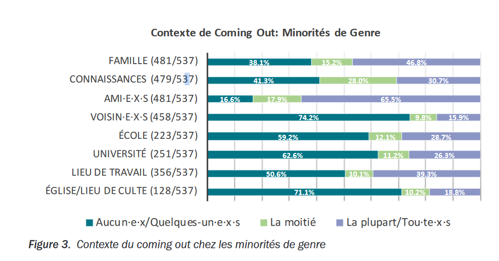
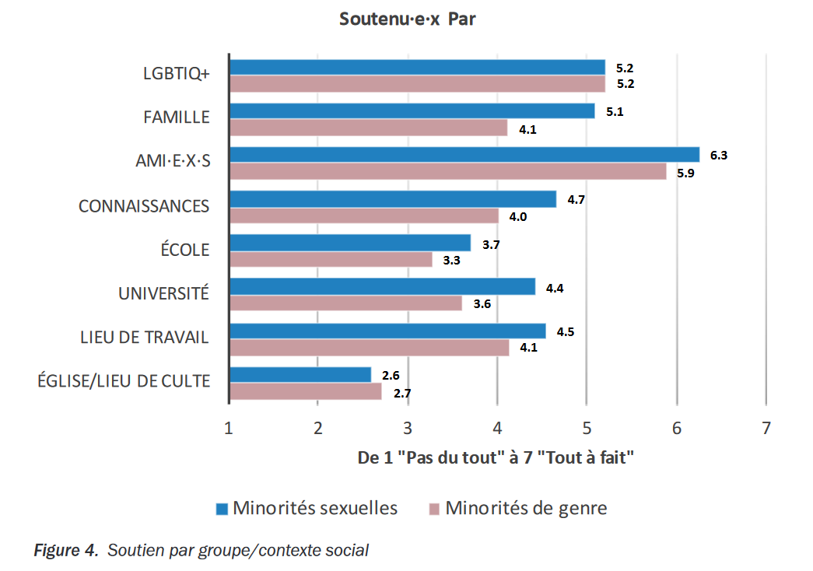
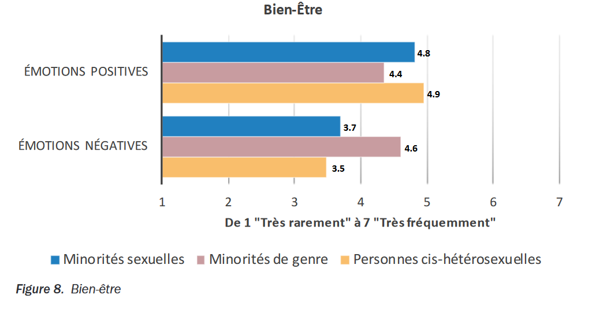

Et en Suisse alors ?
En Suisse, il est légal de transitionner. C'est une chance
que tout le monde n'a pas, notamment dans certains endroit
aux USA. La thérapie hormonale et une partie des chirurgie
sont totalement remboursées par l'assurance de base, bien
que selon l'assurance à laquelle on est souscrit, il sera
plus ou moins simple de demander ces remboursements.
Depuis le 1er 2021 il est d'ailleurs beaucoup plus simple de
réaliser une transition administrative. Avant 2021, il était
possible de changer son prénom et son genre assignée à la
naissance en attaquant le gouvernement en justice et qu'un
juge décide si la personne trans est assez trans pour
autoriser ce changement. Ce parcours était long et cher, il
fallait un avocat, payer des frais de justice et passer des
heures devant un juge et, selon le juge, passer plusieurs
fois au travers du processus. Maintenant, le gouvernement
Suisse est passé sur un système bien plus acceptant des
personnes transgenres. Il part du principe que la personne
qui se présente pour changer son genre assigné à la
naissance ne ment pas, et donc permet, dans un rendez-vous
de 15 minutes auprès de l'état-civil, d'aligner le genre
administratif au genre vécu.
Pour ce qui est du vécu des personnes transgenres, le Swiss
LGBTIQ+ panel fait un rapport par an, qui a pour but de
mesurer l'acceptation et l'intégration des personnes
LGBTIQ+.
En 2022, sur 3468 personnes, 15% s'identifiaient comme
trans* ou non-binaire. Le panel a remarqué que les personnes
transgenre et non-binaire ont tendance à moins faire leur
coming-out. Cela peut être causé par de nombreux critères.

Si l'on regarde la figure 4 du rapport, on peut voir que
dans la plupart des cas, les personnes appartenant à des
minorités de genre sont moins soutenus que les personnes
appartenant à des minorités sexuelles. La figure 8 nous
apporte une vision des pensées positive et négative
comparées aux autres. On y remarque que les personne trans
ressentent nettement plus souvent des pensées négatives que
les personnes cisgenre (non trans).


Sources
Swiss LGBTIQ Panel (Ed.). (2022). Mouvement LGBT. Récupéré
de
https://swiss-lgbtiq-panel.ch/wp-content/uploads/2022/12/LGBTIQPanel_Report22-FR-online_2.pdf
360 Magazine. (2017). Transition et démarches médicales.
Récupéré de
https://association360.ch/trans/conseils/transition-demarches-medicales/
RTS. (2022). Le changement de sexe à l'état civil facilité
dès le 1er janvier 2022. Récupéré de
https://www.rts.ch/info/suisse/12597603-le-changement-de-sexe-a-letat-civil-facilite-des-le-1er-janvier-2022.html